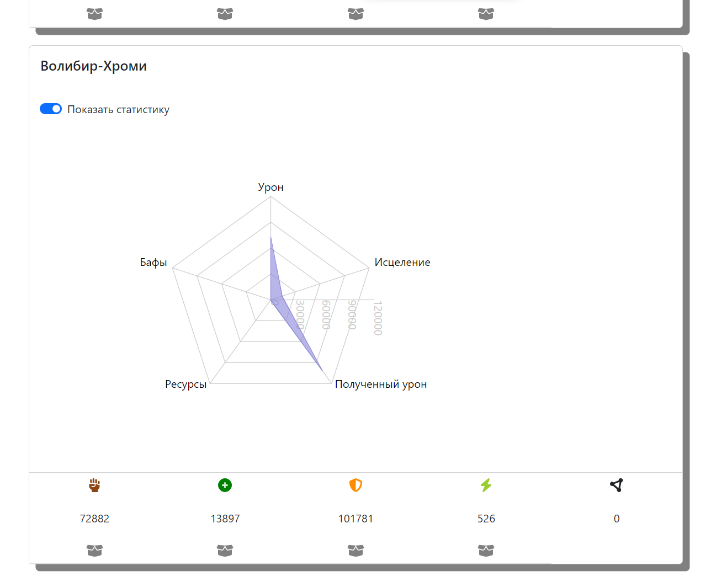
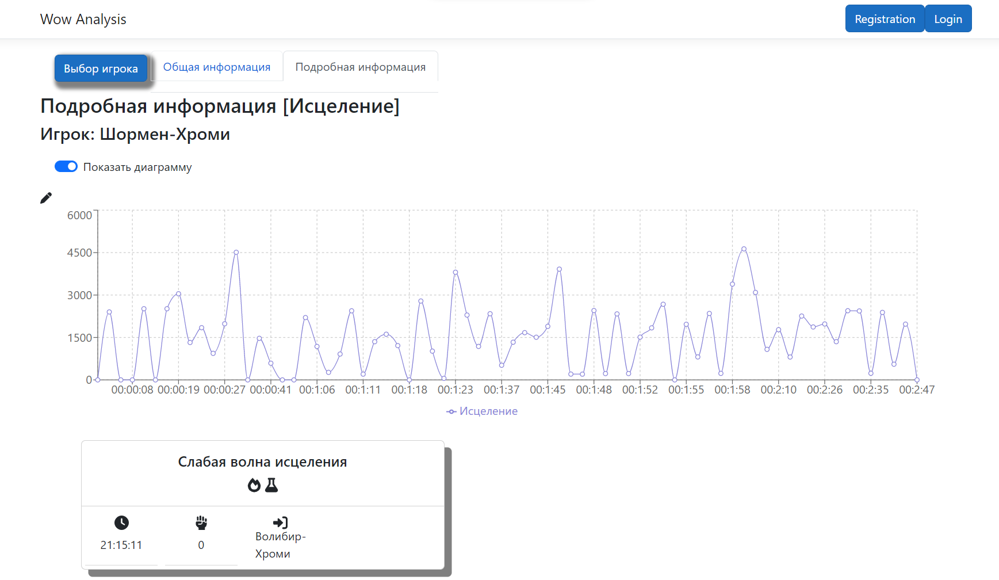
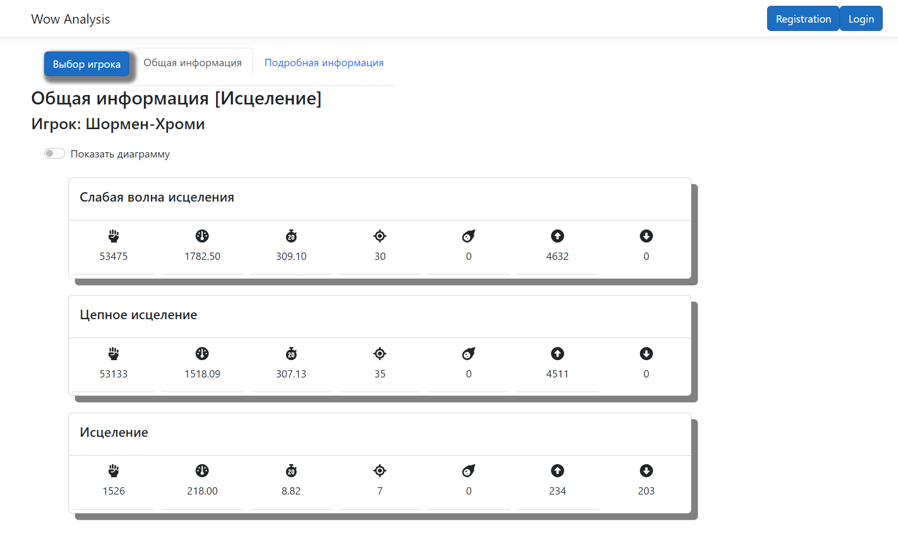

Backend developer who is orientired by .Net
Development experience 2+ years.
Worked with the next technologies:
Developed my personal application: desktop app (WPF) and WEB app (ASP.Core + React.js).
The application allows parse combat logs (WoW games) that are not understandable for the average user into an understandable form and analyze the result of the combat.
Social links:
VK Twitter LinkedinПриложение для Windows позволяет пользователям:
Зачем это нужно?
Details Analysis GCL позволяет анализировать бои игрокам для того, что бы:
Как это работает?
Details Analysis GCL интерпритирует не понятный для человек Лог боя в более понятную и легкую для просмотра форму.
После интерпритации, любой пользователь, не зная каким образом создается Лог боя и какая информация записывается в Лог боя, получает наиболее важную информацию.
Пример важной информации:
Кроме интерпритации, Details Analysis GCL позволяет сохранить данные в базу данных что бы можно было просматривать результат повторно.
Стало немного понятнее, но не до конца? Рассмотрим пример
Предположим в игре (например, World of Warcraft) есть возможность включить Логирования боев в особо сложных подземелья (рейдовых подземельях).
Логирование боев будет создать специальный файл, в который будет сохраняться информация о событиях, которые произошли/происходят во время боя,
но информация записывается в том виде, в котором будет понятно игре, но сложно понятна для игроков. Пример файла с Логами боя:
Представленный пример с информацией о бое сложнопонимаемый для обычного человека: трудно получить необходимую информацию о проведенном бое.
Приложение Details Analysis GCL считывает вышеуказанную информацию, разбивает данные на необходимые сущности, извлекает информацию и предоставляет полученую информацию в понятной форме.
Как это выглядит в Details Analysis GCL:
Что еще умеет Details Analysis GCL?
На вышепредставленных изображения приложения Details Analysis GCL видно, что информация стало понятно любому игроку.
Информация представлена в общем виде и развернутом виде (для каждого игрока отдельно). Кроме того, для получения необходимой лично для Вас информации, можно использовать фильтры отображения данных.
На изображения отображено только часть функционала приложения. Помимо разбора Логов боя, приложение Details Analysis GCL позволяет пользователям (авторизованым) общаться с другими пользователями лично или вступать в групповые чаты.
Общение в Details Analysis GCL:
Приложение пока что не доступно для скачивания
Веб приложение позволяет пользователям:
Зачем нужно Веб приложение, если есть приложение для Windows?
Есть несколько причин, почему некоторым пользователи лучше использовать Веб приложение:
Статистика, отображаемая в Веб приложении
  Приложение пока что не доступно